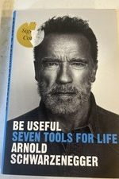

Library › Self-Improvement
Be Useful — Summary & Key Lessons

Seven tools for life — from an Austrian village to Mr. Olympia, Hollywood, and the Governor's mansion, one operating manual.
📖 OPEN THE FULL INTERACTIVE BREAKDOWN →🌐 Read it in Hindi, Hinglish, Gujarati, Tamil & 22 more languages — free, with audio.
💡 The Big Idea
Schwarzenegger's father told him he'd be useless; the book is the 70-year rebuttal, structured as seven tools. (1) CLEAR VISION: not 'success' but a PICTURE — teenage Arnold saw the specific poster of Reg Park, the specific ship to America; 'when you have a clear vision, everything becomes a step toward it, and decisions make themselves' — create yours in stillness, then LOOK at it daily. (2) THINK BIG — never hedge the dream to fit others' comfort: the plan was never 'get fit'; it was Mr. Olympia → movies → beyond, each 'impossible' from the previous rung. (3) WORK YOUR ASS OFF: reps, reps, reps — there are 24 hours; sleep 6, and the math still leaves you no excuses ('the worst thing you can do is nothing'); pain is temporary, quitting reruns forever. (4) SELL, SELL, SELL: greatness unseen doesn't exist — he marketed bodybuilding itself, turned an accent and an unpronounceable name from liabilities into a brand; whatever you build, you must also make people CARE. (5) SHIFT GEARS: setbacks are course-data — heart surgery, career ceilings, scandals; the tool is 'what CAN I do from exactly here?' (6) SHUT YOUR MOUTH, OPEN YOUR MIND: be the sponge in every room — he took acting, business, and English classes DURING his champion years; curiosity is the only lifetime credential. (7) BREAK YOUR MIRRORS (borrowed from his father-in-law Sargent Shriver's speech): the self-obsession mirror is the trap — usefulness to others is both the point and, ironically, the final growth hack. Fitness of purpose over fitness of biceps: be useful.
🧠 The 6 Key Lessons
Lesson 1: Vision First: See the Poster, Then Become It
Tools 1-2
Arnold distinguishes GOALS (abstract: 'be successful') from VISION (concrete: a picture your mind can inhabit — the specific physique on the specific magazine cover, the specific life in the specific country). Vision does three jobs goals can't: it filters decisions automatically (does this rep/meal/party serve the picture? — 'decisions make themselves'), it survives suffering (pain gets meaning as tuition toward a visible destination), and it scales — THINK BIG is vision's dial: the energy cost of imagining a small future and a giant one is identical, but only one recruits your full effort ('if you're going to dream, dream big — the small dream doesn't wake you up at 5 AM'). Creation protocol: quiet time (his: sauna, motorcycle rides), zoom OUT to the big picture first, zoom IN until it's photographic, then expose yourself to it daily — and never let anyone 'realistic' resize it: their realism describes THEIR ceiling.
📖 Example: Fifteen-year-old Arnold in Graz sees a magazine: Reg Park — Mr. Universe turned Hercules actor. In one image, the entire route downloaded: bodybuilding → title → Hollywood → beyond. He papered his bedroom wall with the pictures (his mother called a doctor);… Read the full example →
⚡ Do this: Write your vision as a SCENE, not a sentence: where you wake up in 5 years, the work you do that day, who's there, what got built. Find its 'poster' — one image that encodes it — and put it where your morning starts. Then run today's three biggest choices through it.
Lesson 2: Reps and Salesmanship: Work Builds It, Story Sells It
Tools 3-4
The work tool is arithmetic without mercy: everything is REPS — muscles, skills, speeches, scenes (he rehearsed 'I'll be back' dozens of ways; the take was choice, not luck); follow-through beats intensity (the last five reps, the extra hour, are where growth actually lives: 'the moment it burns is the moment it starts counting'); and time excuses die at the whiteboard — 24 hours, 6 for sleep, job and family accounted for still leaves hours most people donate to screens. But the sleeper tool is SELL: Arnold's edge over equally-muscled rivals was promotion — he understood bodybuilding was a SHOW (posing as theater, interviews as marketing, the sport itself needing a salesman, which he became so successfully it got him to Hollywood before Hollywood wanted him). The generalization: your work, product, or talent competes in an attention economy; refusing to sell — calling it cringe or beneath you — is choosing invisibility and calling it integrity. Learn your story, tell it shamelessly, make the world care about the thing you made it.
📖 Example: The double-exhibit: in the gym era, Arnold trained 4-5 hours daily, twice daily before competitions — but ALSO wrote to magazines, coined quotable lines, courted photographers, and turned weightlifting from freak-show to aspiration (documentary 'Pumping… Read the full example →
⚡ Do this: Pick your current #1 skill-gap and define its daily rep (write/pitch/code/pose — one unit, every day, burn included). Simultaneously, sell once weekly: one public artifact about your work (post, demo, email) — cringe is the tax; visibility is the product.
Lesson 3: Shift Gears, Stay a Sponge, Break Your Mirrors
Tools 5-7
SHIFT GEARS is Arnold's failure-protocol: when reality breaks the plan (his heart surgery mid-career, the bodybuilding ceiling, political term limits), skip the two default poisons — denial and despair — and ask the only useful question: 'what can I do from EXACTLY here, with EXACTLY this?' — reframing isn't spin; it's inventory (post-governorship, 'unemployable' became 'unbooked': climate summits, fitness crusades, this book). SHUT YOUR MOUTH, OPEN YOUR MIND: he audited college classes as the world's most famous bodybuilder, studied cinematography between takes, treated EVERY room as a classroom ('the day you're the smartest person in the room, find another room') — curiosity compounds precisely because most people's stops at their first success. BREAK YOUR MIRRORS — the capstone, stolen with credit from Sargent Shriver: 'it's the mirrors that trap us... break the mirrors and look through to the world' — service (his after-school programs, Special Olympics decades, veteran causes) is presented not as charity-appendix but as the seventh TOOL: usefulness to others is the only scoreboard that doesn't reset, the cure for the self-obsession that stalls late-stage success, and the actual meaning of the title. The tools loop: vision drawn, work done, story sold, gears shifted, mind open — all of it, finally, aimed OUTWARD.
📖 Example: The 2018 open-heart surgery: Arnold woke from a 'simple' valve procedure to learn it had gone wrong — emergency open-heart, lungs failing, months from a planned film. The gear-shift, as he tells it: within hours he set walking targets (10 steps, then… Read the full example →
⚡ Do this: Three installs: (1) write your current worst setback at the top of a page and list ONLY 'what's possible from exactly here' — five entries minimum; (2) enter one room this month where you're the least knowledgeable person, and only ask questions; (3) attach one hour weekly of your actual skill (not spare change — skill) to someone who can't repay you. That's the mirror breaking.
Lesson 4: The Day Is 24 Hours: Arnold's Time Arithmetic
Tool 3 Deep-Dive: Work Your Ass Off
Arnold's most quoted routine deserves its own mechanics. The arithmetic he's run on every complainer since the 1960s: the day is 24 hours — sleep 6 (he concedes 8 if you must), work 8-10, and there remain 6-8 hours being spent SOMEWHERE; the question is never 'do you have time?' but 'what is your time currently buying?' His immigrant-era schedule is the proof of concept: gym 5 hours daily, construction work, acting classes, business school, English classes — simultaneously — because each block was assigned to the vision and none to the couch. The supporting mechanics: MORNINGS ARE SOVEREIGN (train before the world's demands boot up — 'nobody schedules a meeting at 5 AM, which is why 5 AM belongs to you'), FOLLOW-THROUGH IS THE REP THAT COUNTS (everyone starts programs; the physique/skill/business is built by the ones who complete them — he finished every set, every course, every commitment, treating completion itself as the trained muscle), and USE DEAD TIME (scripts learned on construction sites, business courses by correspondence — the hours everyone loses to waiting are a second workday for the deliberate). His anti-burnout clause matters too: the grind serves the VISION, not machismo — work without the poster on the wall is just self-harm with a schedule.
📖 Example: The Munich years, as Arnold tells them: 19 years old, managing a gym at dawn, training twice daily around shifts, business courses at night — while competitors with more talent trained once and socialized. His accounting of why he won Mr. Universe at 20… Read the full example →
⚡ Do this: Run Arnold's audit brutally: log your actual 24 hours for three days, label each block (sleep / work / vision / leak). Most people find 2-4 daily leak-hours. Reassign ONE leak-hour to your vision's daily rep, anchored before the world wakes if possible — and adopt the completion rule: whatever program you start this quarter, finishing it IS the goal, independent of results.
Lesson 5: The Mirror Test: Never Quit, and Never Stop Dreaming
Part 2: The Philosophy
Schwarzenegger's two lifelong rules, distilled from his immigrant rise: never quit (quit once and quitting becomes a habit; push through and resilience becomes the habit) and never stop dreaming (the dream is the engine that fuels the work when motivation dies). The mirror test is his brutal honesty ritual: look in the mirror, ask 'is this what I want my life to be?', and act on the honest answer. The combination is the formula of his life: dream so big it seems absurd, then work so hard it seems crazy, then repeat. Most people fail one of the two — they dream without work (fantasists) or work without a dream (machines). The useful life runs on both, simultaneously.
📖 Example: Schwarzenegger tells of arriving in America with a suitcase and an impossible list of goals — bodybuilding champion, richest in his field, movie star, governor — and being laughed at for each one, until the 'never quit' part turned each laugh into fuel. The… Read the full example →
⚡ Do this: Write your own 'absurd' dream list — the 4 goals that feel too big. Then pick one and ask the mirror test: 'What am I doing THIS week to move toward it?' If the answer is nothing, start with one hour.
Lesson 6: The Importance of Specifics: Vague Goals Are Wishes, Specific Ones Are Plans
Part 3: The Work
Arnold's no-nonsense planning philosophy: 'I don't think of myself as a visionary — I'm a practical person.' Every grand dream in his life was converted into specific, numbered, dated targets: 500 reps, 20-inch arms by a deadline, $X by a date, this role by that election. The specificity does the work that motivation can't: a vague goal ('get fit') gives your brain nothing to execute, while a specific one ('deadlift 200kg by December') creates a clear gap between current and target — and the gap generates the plan. His method: break the dream into milestones, the milestones into weekly targets, the weekly into daily reps, and then just do the reps. The vision is the why; the specifics are the how; the reps are the what. Never confuse the three.
📖 Example: Schwarzenegger describes writing his goals with numbers and dates from age 15 — 'win Mr. Universe by 23, move to America by 22, become the highest-paid actor by 35' — and the specificity let him reverse-engineer each one into daily action. The dreams were… Read the full example →
⚡ Do this: Take your top goal and make it specific this week: the number, the date, the measurable outcome. Then break it into monthly → weekly → daily targets, and start today's.
✅ 5-Step Action Plan
- Draft your vision as a photographic scene; poster it where mornings begin.
- Define the daily rep for your top skill — the burn marks the start line, not the limit.
- Sell weekly: one public artifact about your work, cringe accepted as tax.
- On setbacks, inventory 'what's possible from exactly here' — five options minimum.
- Break the mirror on schedule: one skilled hour weekly for someone who can't repay you.
💬 Best Quotes from Be Useful
- “The worst thing you can do is nothing.”
- “You can't win the race if you're only looking at yourself in the mirror.”
- “None of my dreams had ever come true by dreaming smaller.”
Interactive version: mark lessons as read, listen in your language, share quote cards.